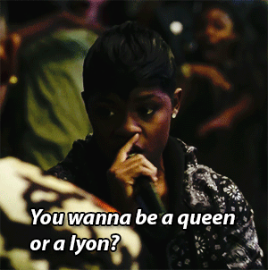

Now known as rapping, spitting, cyphering, or rhyming, MCing is a very obvious mainstay in hip hop culture. The original idea behind MCing is that it was originally a form of poetry that would discuss a lot of issues people were going through. Eventually, rapping became more synonymous with the kind of stuff that you hear on Hot 97.1.
A lot of kids who were growing up in inner city systems were able to find a positive outlet for their struggles thanks to MCing. Rappers like Nas also are known for bringing positive lyrics into hip hop, making it a very popular outlet to help people avoid buckling to pressures of inner city life.To this day, MCing is the most visible pillar of hip hop.
